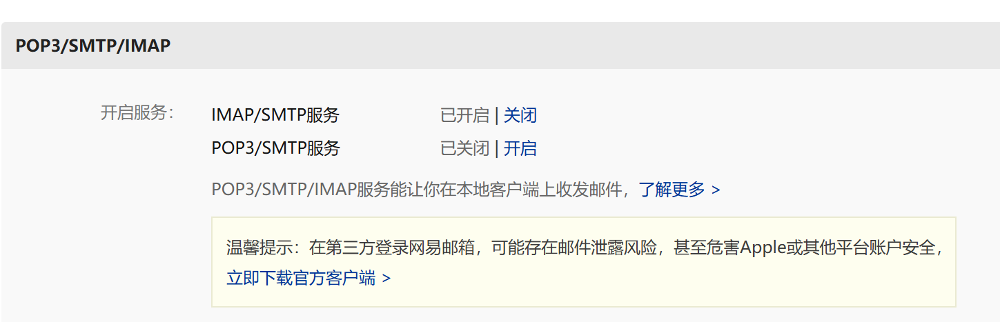

shell 学习
shell的概念
shell 的作用是
- 解释执行用户输入的命令或程序等
- 用户输入一条命令，shell就介绍一条
- 键盘输入命令,linux给相应的方式，称之为交互式
- windows中用 *.bat 处理脚本
- Linux中用 *.sh 处理脚本
Shebang
计算机程序中， shebang 指的是出现在文本文件的第一行前俩个字符 #!
在 Unix 系统中，程序回分析 shebang 后面的内容，作为解释器的指令，例如
- 以 #!/bin/sh 开头的文件，程序在执行的时候会调用 /bin/sh, 也就是bash解释器
- 以 #!/user/bin/python 开头的文件，代表指定python接收器去执行
- 以 #!/user/bin/env 解释器名称 , 是一种在不同平台上都能正确找到解释器的方法
查看shell
[root@localhost ~]# cat /etc/shells #可以查看系统有哪些可用的shell
/bin/sh
/bin/bash
/usr/bin/sh
/usr/bin/bash
cron表达式结构
* * * * * /path/to/command
| | | | |
| | | | +----- 星期几 (0 - 7) (0 和 7 都表示星期日)
| | | +------- 月份 (1 - 12)
| | +--------- 日期 (1 - 31)
| +----------- 小时 (0 - 23)
+------------- 分钟 (0 - 59)
*的含义
* 表示任意值，即匹配所有可能的值
例如：
* * * * *：每分钟执行一次。
0 * * * *：每小时的整点执行一次。
0 2 * * *：每天凌晨 2 点执行一次。
其他常用符号用法
, (逗号) 表示多个值
例如：0 2,14 * * * 表示每天凌晨 2 点和下午 2 点执行。
-(连字符) 表示一个范围
例如：0 8-18 * * * 表示每天 8 点到 18 点之间，每小时执行一次。
/ (斜杠) 表示间隔
例如：*/5 * * * * 表示每 5 分钟执行一次。
? (问号) 在日期和星期几字段中，表示 "不指定值"
例如：0 2 * * ? 表示每天凌晨 2 点执行，不指定星期几
邮件发送
需要安装mail工具
每个系统有点不同
在 Ubuntu/Debian 系统上
apt install mailutils
在 CentOS/RHEL 系统上
yum install -y mailx
需要修改配置，添加发送邮箱
vi /etc/mail.rc
set from=zhangbaojingtz@163.com #邮箱账号 smtp=smtp.163.com
set smtp-auth-user=zhangbaojingtz@163.com smtp-auth-password= #这里需要授权码
set smtp-auth=login
echo "邮件内容" | mail -s "邮件主题" 2915597808@qq.com #需要发送到谁的邮箱
#测试如果发送qq邮箱的话会在垃圾桶，建议发送其他163邮箱
163邮箱开启授权码
进入163邮箱，然后点击设置里面的POP3/SMTP/IMAP

直接开启第一个就可以了，获取授权码，时限只有180天
变量 小知识
[root@localhost ~]# age=19 xxx #shell变量不能空格
-bash: xxx: command not found
[root@localhost ~]# age="19 xxx" #变量需要空格的时候，需要加上双引号
[root@localhost ~]# echo $age
19 xxx
#变量追加
[root@localhost ~]# age=321321
[root@localhost ~]# echo $age
321321
[root@localhost ~]# age="$age"666
[root@localhost ~]# echo $age
321321666
#删除变量
[root@localhost ~]# unset age
[root@localhost ~]# echo $age
#位置传参
#查看脚本内容
[root@localhost ~]# cat adduser.sh
useradd $1
echo $2 | passwd --stdin $1 &>/dev/null
echo "$1 创建成功,密码是$2"
#运行脚本
[root@localhost ~]# bash adduser.sh zhangsan 123456
zhangsan 创建成功,密码是123456
#查看是否创建成功
[root@localhost ~]# id zhangsan
uid=1001(zhangsan) gid=1001(zhangsan) groups=1001(zhangsan)
预定义变量
$0 #当前脚本名/当前程序名
$* #所有参数-- 你传入多少个值都会打印出来
$# #参数的个数，你传入多少给他都会帮你统计
$? #上一个程序的返回值（0成功，非零失败）
编写简易练习脚本
[root@localhost ~]# cat name.sh
#!/bin/bash #指定解释器
read -p "你叫什么名字:" name
echo "你好啊, $name"
[root@localhost ~]# /bin/bash name.sh
你叫什么名字:理想乡
你好啊, 理想乡
[root@localhost ~]# chmod +x name.sh #可以添加执行权限就可以直接执行./name.sh
[root@localhost ~]# ./name.sh
你叫什么名字:理想乡
你好啊, 理想乡
[root@localhost ~]# cat name.py
#!/user/bin/python3
print("你好啊，理想乡")
[root@localhost ~]# python3 name.py
你好啊，理想乡
[root@localhost ~]# which python3 可以用wich 查找python3的位置
/usr/bin/python3
[root@localhost ~]# cat for.sh
#!/bin/bash
for i in {1..10}
do
echo $i;
done
[root@localhost ~]# bash for.sh
1
2
3
4
5
6
7
8
9
10
脚本小练习
检查服务器在不在线
[root@localhost ~]# bash ip.sh
请输入IP地址:192.168.3.100
192.168.3.100 down #不在线会慢一点
[root@localhost ~]# bash ip.sh
请输入IP地址:192.168.3.120
192.168.3.120 upup
[root@localhost ~]# cat ip.sh
#!/bin/bash
#这是一个检查ip在不在线的脚本
read -p "请输入IP地址:" ip
ping -c1 $ip &> /dev/null && echo "$ip upup" || echo "$ip down"
检查仓库有没有软件包
[root@localhost ~]# cat search.sh
#!/bin/bash
# 读取用户输入的软件包名
read -p "输入你要查询的软件：" package_name
# 使用 dnf 命令搜索软件包
if dnf search --cacheonly "$package_name" | grep -qw "$package_name"; then
echo "软件包在仓库中存在。"
else
echo "软件包在仓库中不存在。"
fi
[root@localhost ~]# bash search.sh
输入你要查询的软件：mysql
Last metadata expiration check: 0:53:31 ago on Mon Dec 23 00:10:26 2024.
软件包在仓库中存在。
运算符
+ 加
- 减
\* 乘 （\防止转义-- *是匹配所有）
/ 除
% 取余
^ 次方 2x2x2
方法1
[root@localhost ~]# cat num.sh
#!/bin/bash
read -p "请输入你的分数:" sum1
read -p "请输入你的分数:" sum2
read -p "请输入你的分数:" sum3
echo -n "总分数: "
expr $sum1 + $sum2 + $sum3
[root@localhost ~]# bash num.sh
请输入你的分数:10
请输入你的分数:10
请输入你的分数:20
总分数: 40
num=10
num1=10
expr $num +$num1
20
方法2
$(())
语法: echo $(($unb1 + $unb2 +$unb3))
echo $((1+1*5))
方法3
s[]
语法 echo $[1+2]
小数运算
需要安装bc
yum install -y bc #计算库
[root@localhost ~]# echo "scale=2; 10/3" | bc #余2位数，使用bc处理
3.33
[root@localhost ~]# echo "scale=5; 10/3" | bc
3.33333
[root@localhost ~]# echo "scale=3; 10.7 + 3.3" | bc
14.0
逻辑判断
# 逻辑判断命令 --
#判断整数的时候用的
-eq 两数相等，则为真 例：if ["$a" -eq "$b" ] #括号要有空格
-ne 两数不相等，则为真 例： if ["$a" -ne "$b" ]
-gt a大于b，则为真 例： if ["$a" -gt "$b" ]
-ge 大于或等于，则为真 例： if ["$a" -ge "$b" ]
-lt a小于b，则为真 例： if ["$a" -lt "$b" ]
-le a小于或等于b，则为真 例： if ["$a" -le "$b" ]
#判断文件
-e filename 如果 filename存在，则为真
-d filename 如果 filename为目录,则为真
-f filename 如果 filename为常规文件,则为真
-r filename 如果 filename可读,则为真 #用户会有区别，root用户的情况下都为真，因为他是zui'da
-w filename 如果 filename可写，则为真
-x filename 如果 filename可执行，则为真
-s filename 如果文件长度不为0，则为真（文件不能为空）
-h filename 如果文件是软链接，则为真
#判断字符串
== 或= 判断俩个字符串是否相等 #=是==的别名，功能相同
!= 判断两个字符串是否不相等
-z 判断字符串是否为空 (长度为0)
-n 判断字符串是否非空 (长度不为0)
< > 按字典顺序比较字符串
case 语句 多条件字符串匹配
多条件判断
and 满足所有条件，则为真
[root@localhost ~]# [ 1 -lt 5 -a 6 -lt 9 ] ; echo $? # -lt是小于
0
[root@localhost ~]# [ 1 -lt 5 -a 6 -lt 3 ] ; echo $?
1
or 满足其中一个条件，则为真
[root@localhost ~]# [ 1 -lt 2 -o 6 -lt 3 ] ; echo $?
0
判断练习
单\双分支if判断
[root@localhost ~]# cat useradd.sh
#!/bin/bash
read -p "输入你要创建的用户:" name
id $name &> /dev/null
if [ $? -ne 0 ]; then # then表示为真才会处理后面结果
useradd $name
echo "$name 创建成功"
else #加了else表示双分支
echo "$name 已经存在"
fi
多分支if判断
[root@localhost ~]# cat data.sh #判断当前时间脚本
#!/bin/bash
hour=$(date +"%H")
#判断时间段
if [ $hour -ge 0 -a $hour -lt 6 ]; then
echo "现在是凌晨"
elif [ $hour -ge 6 -a $hour -lt 12 ]; then
echo "现在是上午"
elif [ $hour -ge 12 -a $hour -lt 18 ]; then
echo "现在是下午"
else
echo "现在是晚上"
fi
嵌套分支
[root@localhost ~]# cat num.sh
#!/bin/bash
target=10
echo " 进入猜数字游戏,请输入一个1-100数字:"
read -p "请输入你的数字:" guess
if [ "$guess" -eq "$target" ]; then
echo "恭喜你，猜对了"
num=20
read -p "继续猜一个数字:" guess
if [ "$guess" -eq "$num" ]; then
echo "恭喜你猜对了,游戏结束,这是嵌套的"
else
echo "猜错了，游戏结束,这是嵌套的"
fi
else
echo "猜错了，游戏结束"
fi
case 穿透
[root@localhost ~]# cat case.sh
read -p "是否输入yes or no " input
#使用if语句
if [ "$input" = "yes" -o "$input" = "YES" ];then #如果需要重新判断大小写需要另加-o
echo "输入的是yes"
elif [ "$input" = "no" ];then
echo "输入的是no"
else
echo "输入错误"
fi
case "$input" in
"yes"|"YES"|"Yes") #但是case可以直接加| 然后写上大写YES
echo "你选择了 yes"
;;
"no")
echo "你选择了 no"
;;
*)
echo "无效的选择"
;;
#sac
case 例子 模拟堡垒机登录
[root@localhost ~]# cat case.sh
db0=192.168.3.100 #提前设置免密登录会快一点，不然登录的时候要输入密码
db1=192.168.3.101
db2=192.168.3.102
cat << EOF
0.登录db0
1.登录db1
2.登录db2
EOF
read -p "请输入要登录的机器:" num
case $num in
0)
ssh root@$db0;;
1)
ssh root@$db1;;
2)
ssh root@$db2;;
*)
echo "未选择机器，退出选择"
esac
系统工具箱 更改源地址，还可以编写内存硬盘之类的后面
[root@localhost ~]# cat case.sh
#!/bin/bash
echo "---开始选择下载加速源---"
cat <<EOF
1. 阿里源
2. 华为源
3. 清华源
EOF
read -p "请输入需要配置的加速源: " rep
case $rep in
1)
curl -o /etc/yum.repos.d/CentOS-Base.repo https://mirrors.aliyun.com/repo/Centos-7.repo
curl -o /etc/yum.repos.d/epel.repo https://mirrors.aliyun.com/repo/epel-7.repo
echo "阿里源配置完成"
;;
2)
curl -o /etc/yum.repos.d/CentOS-Base.repo https://mirrors.huaweicloud.com/repository/conf/CentOS-7-anon.repo
echo "华为源配置完成"
;;
3)
curl -o /etc/yum.repos.d/CentOS-Base.repo https://mirrors.tuna.tsinghua.edu.cn/repo/Centos-7.repo
echo "清华源配置完成"
;;
*)
echo "未选择有效的加速源，退出配置"
exit 1
;;
esac
echo "---请输入你要下载的软件包名字---"
read -p "请输入软件名字开始下载: " name
yum install $name -y
debug
语法: sh -vx xxxx xxx为脚本名称
[root@localhost ~]# sh -vx case.sh
#!/bin/bash
echo "---开始选择下载加速源---"
+ echo ---开始选择下载加速源--- #出现+号表示已经成功运行
---开始选择下载加速源---
cat <<EOF
1. 阿里源
2. 华为源
3. 清华源
EOF
+ cat
1. 阿里源
2. 华为源
3. 清华源
read -p "请输入需要配置的加速源: " rep
+ read -p '请输入需要配置的加速源: ' rep
请输入需要配置的加速源: 1
case $rep in
1)
curl -o /etc/yum.repos.d/CentOS-Base.repo https://mirrors.aliyun.com/repo/Centos-7.repo
curl -o /etc/yum.repos.d/epel.repo https://mirrors.aliyun.com/repo/epel-7.repo
echo "阿里源配置完成"
;;
2)
curl -o /etc/yum.repos.d/CentOS-Base.repo https://mirrors.huaweicloud.com/repository/conf/CentOS-7-anon.repo
echo "华为源配置完成"
;;
3)
curl -o /etc/yum.repos.d/CentOS-Base.repo https://mirrors.tuna.tsinghua.edu.cn/repo/Centos-7.repo
echo "清华源配置完成"
;;
*)
echo "未选择有效的加速源，退出配置"
exit 1
;;
esac
+ case $rep in
+ curl -o /etc/yum.repos.d/CentOS-Base.repo https://mirrors.aliyun.com/repo/Centos-7.repo
% Total % Received % Xferd Average Speed Time Time Time Current
Dload Upload Total Spent Left Speed
100 2523 100 2523 0 0 9024 0 --:--:-- --:--:-- --:--:-- 9043
+ curl -o /etc/yum.repos.d/epel.repo https://mirrors.aliyun.com/repo/epel-7.repo
% Total % Received % Xferd Average Speed Time Time Time Current
Dload Upload Total Spent Left Speed
100 664 100 664 0 0 1930 0 --:--:-- --:--:-- --:--:-- 1935
+ echo 阿里源配置完成
阿里源配置完成
echo "---请输入你要下载的软件包名字---"
+ echo ---请输入你要下载的软件包名字---
---请输入你要下载的软件包名字---
read -p "请输入软件名字开始下载: " name
+ read -p '请输入软件名字开始下载: ' name
请输入软件名字开始下载: vim
yum install $name -y
+ yum install vim -y
已加载插件：fastestmirror
Loading mirror speeds from cached hostfile
* base: mirrors.aliyun.com
* extras: mirrors.aliyun.com
* updates: mirrors.aliyun.com
base | 3.6 kB 00:00:00
epel | 4.3 kB 00:00:00
extras | 2.9 kB 00:00:00
updates | 2.9 kB 00:00:00
软件包 2:vim-enhanced-7.4.629-8.el7_9.x86_64 已安装并且是最新版本
无须任何处理
[root@localhost ~]#
运维常用脚本练习
系统监控脚本
#!/bin/bash
# 设置阈值
CPU_THRESHOLD=80
MEM_THRESHOLD=80
DISK_THRESHOLD=90
# 获取 CPU 使用率
CPU_USAGE=$(top -bn1 | grep "Cpu(s)" | awk '{print $2}' | cut -d'%' -f1)
# 获取内存使用率
MEM_USAGE=$(free | grep Mem | awk '{print $3/$2 * 100.0}')
# 获取磁盘使用率
DISK_USAGE=$(df -h / | awk 'NR==2 {print $5}' | cut -d'%' -f1)
# 检查 CPU 使用率
if (( $(echo "$CPU_USAGE > $CPU_THRESHOLD" | bc -l) )); then
echo "CPU 使用率过高: $CPU_USAGE%" | mail -s "CPU 告警" admin@example.com
fi
# 检查内存使用率
if (( $(echo "$MEM_USAGE > $MEM_THRESHOLD" | bc -l) )); then
echo "内存使用率过高: $MEM_USAGE%" | mail -s "内存告警" admin@example.com
fi
# 检查磁盘使用率
if [ "$DISK_USAGE" -gt "$DISK_THRESHOLD" ]; then
echo "磁盘使用率过高: $DISK_USAGE%" | mail -s "磁盘告警" admin@example.com
fi
日志清理脚本
#!/bin/bash
# 日志目录
LOG_DIR="/var/log/myapp"
# 保留最近 7 天的日志
find $LOG_DIR -type f -name "*.log" -mtime +7 -exec rm -f {} \;
echo "日志清理完成"
备份脚本
#!/bin/bash
# 备份目录
BACKUP_DIR="/backup"
SOURCE_DIR="/var/www/html"
# 备份文件名
BACKUP_FILE="backup_$(date +%Y%m%d).tar.gz"
# 打包备份
tar -czf $BACKUP_DIR/$BACKUP_FILE $SOURCE_DIR
echo "备份完成: $BACKUP_DIR/$BACKUP_FILE"
python 连接数据库
1.安装python3开发环境的依赖
yum install python3 python3-devel python3-pip
2.通过python的包管理工具，安装连接mysql的模块
pip3 install pymysql -i https://mirrors.aliyun.com/pypi/simple/
#如果是mysql8.0版本还需要安装cryptography
pip3 install cryptography -i https://mirrors.aliyun.com/pypi/simple/
开发python连接mysql的代码，注意python的代码，空格数量是严格把控的
数据库连接正确，该数据库版本是: 8.0.30
[root@zabbix-server ~]# cat mysql.py
import pymysql
db = pymysql.connect(
host="localhost",
port=3306,
user="root",
password="Admin123...",
db="zabbix",
charset="utf8"
)
# 操纵数据库
cursor=db.cursor()
cursor.execute("select version()")
data=cursor.fetchone()
print("数据库连接正确，该数据库版本是: %s"%data)
db.close()